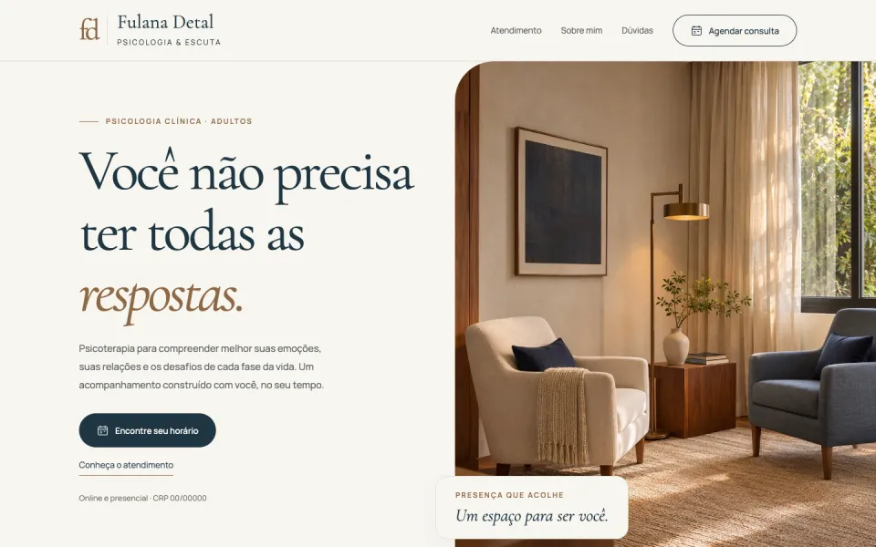
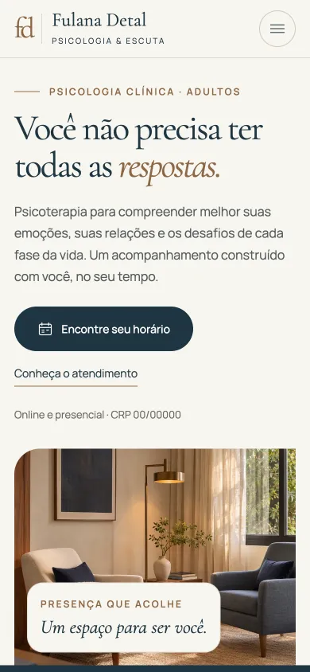
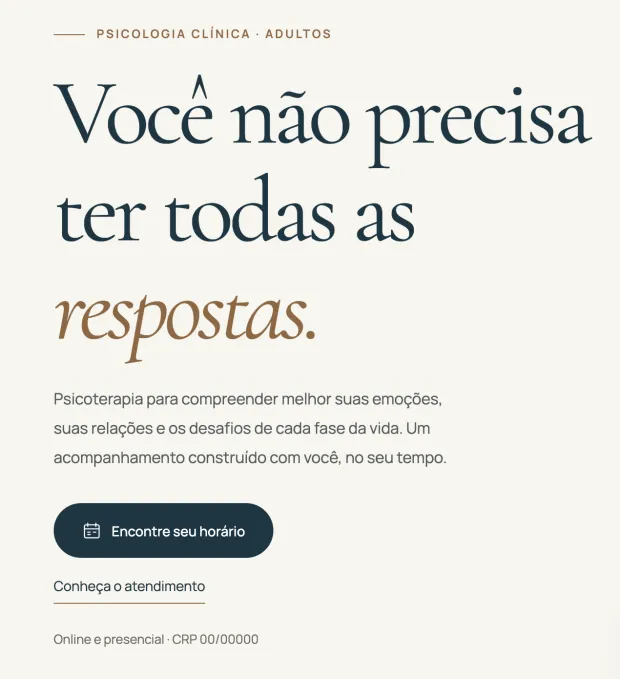
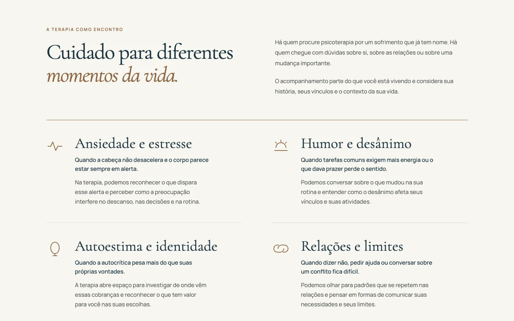

Projeto autoral · Desenvolvimento web
Single page com agendamento online
Site institucional de página única para profissionais que atendem com hora marcada. Apresenta a atuação, esclarece dúvidas sobre os atendimentos e facilita o agendamento de consultas.
A demonstração usa uma psicóloga fictícia, mas a estrutura, o visual e a composição servem a outras áreas. O projeto foi construído com HTML, CSS e JavaScript, com interface responsiva, identidade visual própria e um fluxo demonstrativo de agendamento que funciona no navegador.


- Formato
- Single page
- Para
- Profissionais que atendem com hora marcada
- Demonstração
- Persona fictícia, Fulana Detal
- Tecnologias
- HTML, CSS e JavaScript
- Publicação
- GitHub Pages, para portfólio
Abertura
A página tem um objetivo: levar quem chega a marcar um horário. Por isso, a primeira dobra, o que aparece antes de rolar, responde ao que a pessoa precisa saber para decidir (quem atende, para quem e em que formato) e oferece uma única ação, “Encontre seu horário”. As outras seções ficam a um clique, pelo menu ou pelo link logo abaixo do botão.
A hierarquia está no HTML: um único título principal, seções nomeadas e links internos. No celular, a ordem se mantém, com título, texto e ação antes da fotografia, e o menu vira um painel que abre e fecha pelo teclado.

Agendamento
O agendamento é onde a página cumpre seu objetivo: transformar o interesse em um horário escolhido. Na interface, a escolha acontece em três etapas: formato do encontro, dia e horário. Os cinco próximos dias com atendimento aparecem como atalhos, o campo de data cobre os 90 dias seguintes e um resumo acompanha a seleção até a revisão.
Nenhum horário é escrito à mão. Uma grade semanal define as faixas de atendimento de cada dia, e cada faixa se divide em sessões de 50 minutos com 10 de intervalo. O dia de referência é calculado no fuso de Brasília, e o restante trabalha com datas de calendário, sem conversões de fuso.
A cada escolha, o formulário recalcula os horários do dia, atualiza atalhos, mensagens e resumo e leva a pessoa ao próximo campo pendente. No envio, a revisão se abre em uma janela de diálogo nativa, e as mensagens de erro são anunciadas por leitores de tela.


Implementação
Sem bibliotecas nem etapa de build: um arquivo de HTML, um de CSS e um de JavaScript. Recursos nativos do navegador resolvem a janela de diálogo, as perguntas expansíveis e a observação da rolagem.
- Estrutura
- HTML semântico, com cabeçalho, navegação, seções rotuladas, rodapé e um sprite SVG para os ícones.
- Estilo
- CSS com variáveis para cores, espaçamentos e tipografia; layout responsivo do desktop até 360px; Cormorant Garamond e Manrope via Google Fonts.
- Interface
<dialog>para a revisão,<details>para as dúvidas frequentes e um menu expansível controlado poraria-expanded.- Acessibilidade
- Link para pular ao conteúdo, navegação por teclado,
aria-invalid,aria-describedbyearia-liveno formulário; respeito aprefers-reduced-motioneprefers-reduced-transparency. - Busca
- Título, descrição, Open Graph, canonical, dados estruturados,
sitemap.xmlerobots.txt.
Desempenho
No PageSpeed Insights, a página marca 93 de desempenho no celular e 100 no computador, com 97 em acessibilidade e 100 em práticas recomendadas e SEO nos dois. O primeiro acesso transfere 278 KB, e todo o código escrito para o projeto, entre HTML, CSS e JavaScript, soma 17 KB.
A fotografia principal carrega com prioridade e tem largura e altura declaradas, o que reserva o espaço antes do download e evita saltos no layout. A segunda foto só é baixada quando se aproxima da tela, e o script, carregado com defer, não atrasa a primeira renderização. As fontes usam preconnect e display=swap, então o texto aparece antes delas. Cabeçalho e animações de entrada reagem por IntersectionObserver, sem escutar a rolagem.
- 0–49
- 50–89
- 90–100
- 93 de 100 Desempenho
- 97 de 100 Acessibilidade
- 100 de 100 Práticas recomendadas
- 100 de 100 SEO
- First Contentful Paint
- 1,5 s
- Largest Contentful Paint
- 3,0 s
- Total Blocking Time
- 0 ms
- Cumulative Layout Shift
- 0
- Speed Index
- 2,8 s
Moto G Power emulado, conexão 4G lenta · Lighthouse 13.6.0
- 100 de 100 Desempenho
- 97 de 100 Acessibilidade
- 100 de 100 Práticas recomendadas
- 100 de 100 SEO
- First Contentful Paint
- 0,4 s
- Largest Contentful Paint
- 0,7 s
- Total Blocking Time
- 0 ms
- Cumulative Layout Shift
- 0
- Speed Index
- 0,4 s
Área de trabalho emulada · Lighthouse 13.6.0
PageSpeed Insights, análise de 24 de novembro de 2026.
278 KB no primeiro acesso
- Fotografia principal
- 189 KB
- Fontes
- 71 KB
- HTML, CSS e JavaScript
- 17 KB
As notas variam a cada análise. O PageSpeed Insights mede a versão publicada no momento do acesso, no celular e no computador.
Fazer uma nova análise no PageSpeed Insights (abre em nova aba)Identidade visual
A paleta tem três cores com papéis definidos: azul-petróleo para títulos e faixas de contraste, papel como fundo e bronze como cor de destaque. Na tipografia, uma serifa clássica nos títulos e uma sem serifa no texto corrido; o contraste entre as duas separa a chamada da leitura.
O itálico em bronze destaca o trecho final de cada título, e ícones de traço fino, na mesma cor, sinalizam os temas de atendimento.

- Azul-petróleo
#1D3541Títulos e contraste - Papel
#F7F5F0Fundo - Bronze
#8D6845Destaque
- Títulos · serifa
- Cormorant Garamond
- Texto · sem serifa
- Manrope
Explore o projeto
-
Demonstração
Ver a demonstração (abre em nova aba)Abre o site publicado em nova aba, com o agendamento demonstrativo.
-
Código
Ver o repositório (abre em nova aba)Código-fonte completo no GitHub, em nova aba.
-
Acervo
Ver todos os projetosVolta ao acervo, com todos os projetos publicados.
Precisa de um site para apresentar seu trabalho?
Entre em contato para conversarmos sobre o desenvolvimento do seu site.